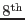
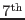

Any events that have obtained a negative charge sum PI (see above) and a get a positive total charge PI assigned; if these have then they get a positive total charge PI assigned and the INVALID_PATTERN bit set in the FLAG column.
In the implementation of version 6.30.3 (and earlier) single events close to edges or bad pixels do not get PATTERN=0 but get the  bit set, too, and thus PATTERN=128 (Sect.7.2). All (apparent) singles at the CCD edges, readout window, or close to bad pixels get PATTERN=128. Additionally, they get the corresponding flag set, e.g. CLOSE_TO_READOUT_WINDOW. So there is a double-coding, the PATTERN bit says that a FLAG bit is set and the FLAG says which one. If one is interested in ``safe" single events (as far as the location with respect to CCD edges, readout window, and bad pixels is concerned) then the selection expression ``PATTERN==0'' is already sufficient. This implys that one will not keep single-pixel photons with RAWX=1 or RAWX=64, so there will be larger gaps between the CCDs in such images. If this is not desirable then select ``(PATTERN==0)||(PATTERN==128)''. Then one has to keep in mind the effect of possible charge losses: for broad-band imaging purposes this may be fine, however, accurate spectral modelling should use ``FLAG==0''.
The first example in Sect.7.4.1.3 was considered as valid double (here PATTERN=4), the others not and therefore do not have PATTERN=1-4 but get PATTERN=205: next unused PATTERN, i.e. 13, plus the  and bit set. Similarly, triples (and quadruples) with the main charge at the CCD egde, readout window, or bad pixel, do get PATTERN 14+64+128 = 206 (and 15+64+128 = 207, respectively), and the relevant FLAG setting.
The last invalid quadruple example in Sect.7.4.1 where the mimimum charge is not opposite to the main charge, is an invalid quadruple, so it gets a ``base'' pattern of 15 plus the bit set, i.e. PATTERN=79.
Any very large pattern, with pixels involved, gets a PATTERN = 64+32+(n-5) if no edges or bad pxiels are involved, and PATTERN = 128+64+32+(n-5) if an edge or bad pixel is touched by this event ensemble.
Note: as of version 6.30.4 PATTERN values of 128 have been changed to 0 (i.e. bit is not set anymore for singles), and PATTERN values of 205 have been changed to 1-4 (i.e. and bit are not set anymore for doubles). All the FLAG coding and all other PATTERN bit coding is unchanged.
Note: a keyword SCR_88=``T'' in the EXPOSURE (and EVENTS) extension of the output file of epevents indicates that this new behaviour was used, if the keyword is absent or contains ``F'' then the old behaviour (PATTERN=128 or PATTERN=205 for singles and doubles close to CCD edges or bad pxiels) is present.